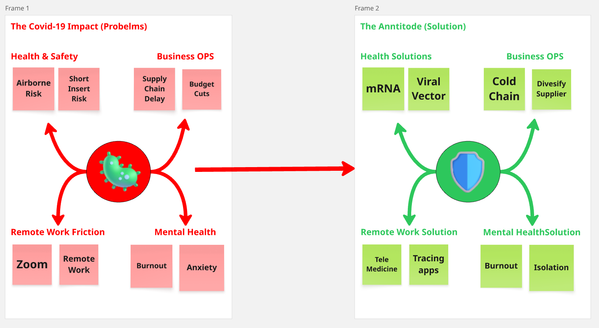

Ideation
Covid-19 (Miroboard)
This strategic framework outlines a comprehensive COVID-19 Recovery Plan. It maps the journey from diagnosing critical business and mental health risks (The Impact) to designing targeted operational interventions (The Antidote). The strategy culminates in a role-based Hybrid Workforce Model—segmenting teams into Cloud, Mixed, or On-Premise roles—and facilitates execution through a tactical Kanban action plan for HR and IT
View Case Study →